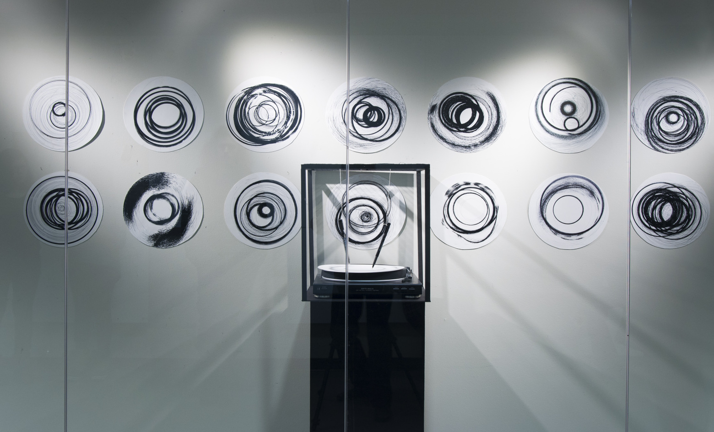
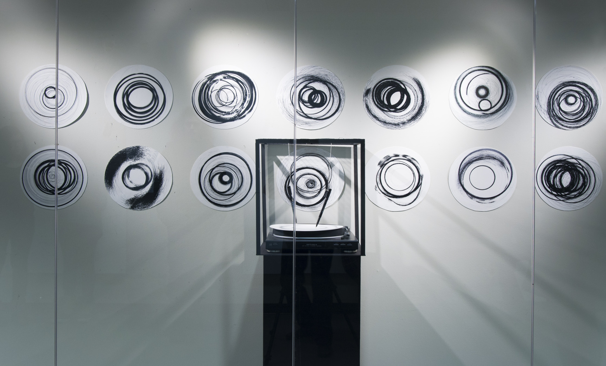

drawing machine, Installation drawing, 2016
The primary function of this kinetic work, activated periodically, is to draw. I decided to have a crack at kinetic art to question the notion of design and performance. Should we limited to only draw mechanically using of own hands? I wanted to challenge this assumption by creating a machine that draws random drawings by itself.